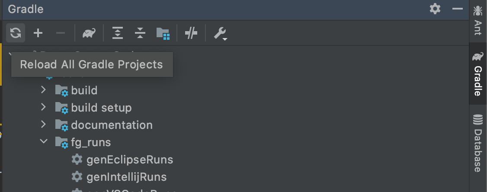
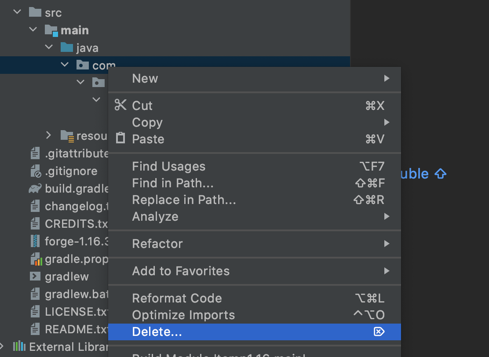
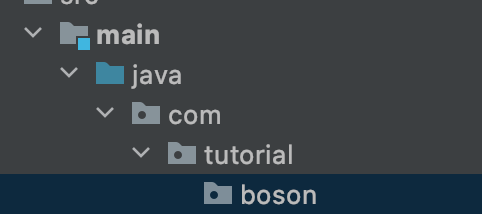
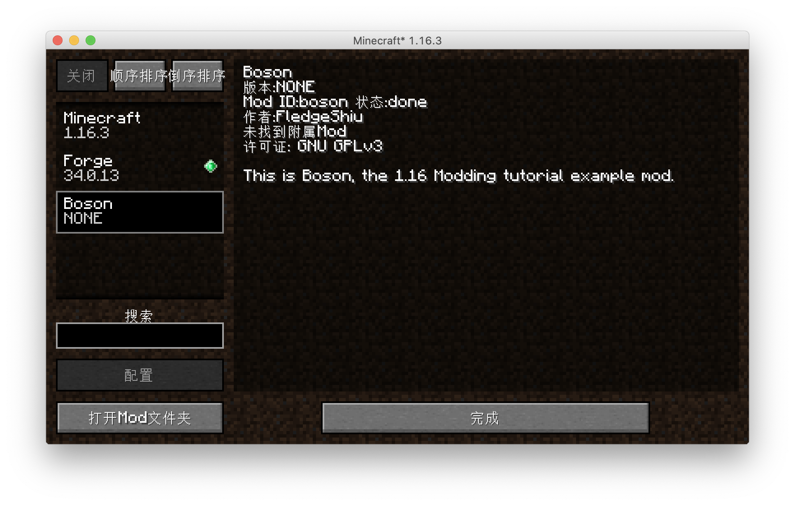
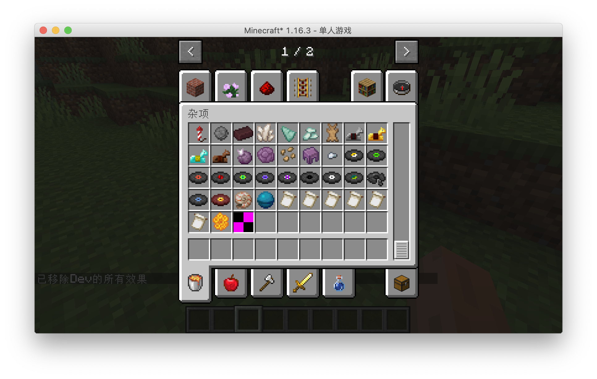
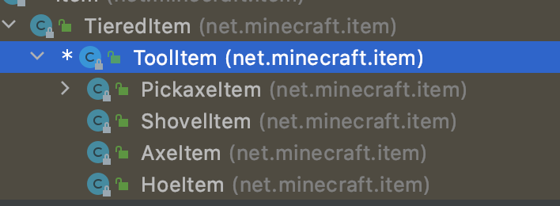
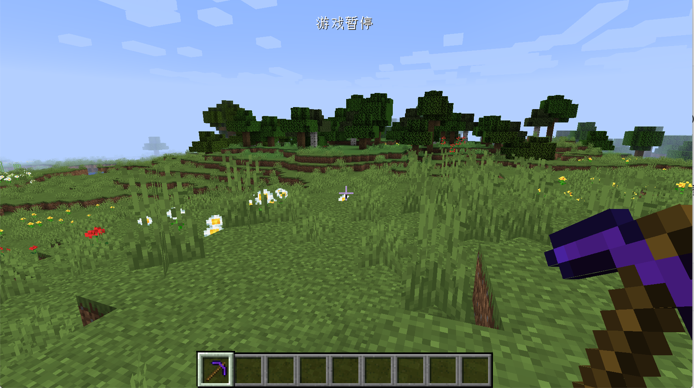

导论
首先欢迎你来到这个教程，既然你会打开这个教程，想必你心中有了开发一个属于自己的mod的念头吧。
正好，这个教程也是为这个目的服务的。但是开发一个属于自己的mod并不是一件容易的事情，你需要学习非常多的知识才能达成这个目标，阅读和跟随这个教程只是非常浅显的部分。
首先我想让你思考一个问题：你真的需要自己从头开发一个mod吗？
其实对于大部分人的需求，不需要从零开发一个Mod。有非常多其他的办法可以达成他们的目标：原版内置的机制，MCreator和ZenScript等。
如果你的答案是确定的，那么第二个问题：你真的需要亲自写一个mod吗？
Mod开发需要编程和相当的计算机科学基础，要学好这些并不容易，如果你是一个不会编程的人，或者只是粗略的学过编程，我的建议是寻找同伴。美工和设计在Mod开发中也是不可或缺的一部分。
如果你对上面两个问题的答案都是肯定的，那么我觉得你可以开始阅读这个教程了。在这个教程里，我会假设你有一定的计算机科学常识，熟悉Java编程的基础。
那么如果你现在还不会编程怎么办？没关系，这里有个教程推荐给你：Minecraft mod 开发编程入门
如果你有任何的问题，请去论坛上按照模版发帖提问。
许可证

This work is licensed under a Creative Commons Attribution-NonCommercial-NoDerivatives 4.0 International License.
Forge是什么
本教程是一个基于Forge的Mod开发教程，那么自然而然的要回答一个问题：「Forge是什么？」
乍一看，这个好像根本就不是一个问题，「Forge？Forge不就是Forge吗？」看到这个问题的你内心中的第一个浮现出的想法估计就是这个。
但是回答这个问题还是非常有必要的，接下去我会稍微讲一讲Forge是什么，以及Forge的历史。这些看上去和我们教程无关的内容，其实是Mod开发领域的「乡谣（Lore）」，学会这些可以更好的让你和其他人交流。
我们得从Minecraft本身说起，首先我们得明确Minecraft是一个用Java写成的商业软件。这意味着两件事：第一，Minecraft相对容易修改；第二，代码本身是不开源而且是被混淆过的。在Minecraft历史的早期，因为在Mojang一直都没有给Minecraft提供官方API1，所以「Mod Coder Pack」项目诞生了（以下简称为MCP）。
还记得我之前说过的，Minecraft的两个特性吗？MCP就利用这两个特性，实现了一套工具，可以让开发者可以直接修改Minecraft jar包里的内容。
于是srg名，notch名和mcp名诞生了。
那么这三个是什么呢？
首先是notch名，他是Minecraft直接反编译、反混淆之后的名称，通常是无意义的字母数字组合。你从名称Notch就可以看出，这个名字是直接来自Minecraft（以及对Notch的怨念），举例来说 j就是一个典型的notch名。
接下来是srg名，这个名字是和notch名是一一对应的，srg名在一个版本里是不会变动的，之所以叫做srg名，是为了纪念MCP项目开发的领导者Searge。在srg名中，Minecraft中的类名已经是可读了，变量方法等名称虽然还是不可读，但是有相对应的前缀和尾缀来区分了。以上面的j为例，它的srg名是func_70114_g。
最后是mcp名，这个名称也是我们mod开发中接触最多的名称，在mcp名中，代码已经是可读的了。和我们正常写java程序中的名称没什么两样。但是mcp名是会变动的。举例来说上面的func_70114_g它的mcp名是getCollisionBox。mcp名中的类名和srg名中的类名是相同的。
接下来我们来讲Forge，随着时间的发展，Mod开发者们意识到，直接修改Jar文件写mod的方式太过于粗暴了，而且Mod和Mod之间的兼容性可以说基本没有，Mod开发者们急需一种工具可以方便地开发Mod，并且能保证mod和mod之间的兼容性，于是Forge就诞生了。
Forge其实就是一套通过修改Minecraft方式实现的第三方API，而且随着时间的发展，MCP现在已经死亡了，除了Forge这套API，Fabric也风头正盛，而Forge本身也在Minecraft 1.13版本到来之后经历了一次重写，引入了大量函数式编程的API。
那么Forge是怎么使用我们之前提及的三个名字的呢？
在你安装完Forge之后，游戏的运行过程中，所有的内容都会反编译成srg名运行，你编译好的mod同样也会被混淆成srg名，保证它可以正常运行。
API 即 「Application programming interface（应用程序接口）」，是程序的提供的一种机制允许第三方修改或者添加功能。
Minecraft如何运作的
这节的内容非常重要，你必须在自己的大脑中构建起Minecraft运行的模型图像，这将会帮助你理解后面涉及到的概念。
在这一节中，我将介绍一下Minecraft大体上是怎么运作的，以及一个非常重要的概念：「端」。
Minecraft大体上属于「C/S架构（客户端/服务端架构）」。那么什么是「服务端」，什么又是「客户端」呢？
从名字上其实就能看出大概的意思，「服务端」是用来提供服务的，「客户端」是用户直接使用的。那么这两个端在Minecraft中是怎么体现的呢？
在Minecraft中两个端的职责区分如下：
-
服务端
负责游戏的逻辑，数据的读写。
-
客户端
接受用户的输入输出，根据来自服务端的数据来渲染游戏画面。
值得注意的是，这里客户端和服务端的区分仅是逻辑上的区分。实际上如果你处于单人模式，那么你的电脑上会同时存在服务端和客户端，而且他们处于不同的线程1。但是当你连接某个服务器时，你的电脑上只存在客户端，服务端被转移到了远程的一台服务器上。
下面一张图大概的解释了Minecraft是怎么运作的。

看到这张图，你可能觉得奇怪，说好的是服务端负责游戏逻辑的呢，为什么客户端也有数据模型？其实这里的「客户端数据模型」只是「服务端数据模型」一个副本，虽然它们都有独立的游戏Tick，也共享很多相同的代码，但是最终逻辑还是以服务端为准。
之前我们提到，客户端和服务端是独立运行的，但是它们不可避免地需要同步数据，而在Minecraft里，所有客户端和服务端的数据同步都是通过网络数据包实现的。在大部分时候原版已经实现好了数据同步的方法，我们只需要调用已经实现好的方法就行，但是在某些情况下，原版没有实现对应的功能，或者不适合使用原版提供的功能，我们就得自己创建和发送网络数据包来完成数据的同步。
那么接下去的问题是，我们怎么在代码中区分我们是处于客户端还是服务端呢？
Minecraft的World中有一个isRemote字段，当处于客户端时这个变量值为true，当处于服务端时这个变量值为false。
线程是程序调度的单位之一，处于不同的线程意味着这两个的逻辑和数据是互相独立的，只能通过特定的方法同步数据。具体来说，服务端处于「Server thread」，客户端处于「Render thread」，如果你有观察过Minecraft启动时的输出日志，应该会看到这两个词。
开发模型
在这节中，我们将会粗略的讲一讲Minecraft mod的开发模型是什么样子的，理解这个模型将有助于你理解mod开发中的很多操作是为了什么。
在我看来，Minecraft mod 开发基本上遵循了「事件驱动模式」，这里我们不会详细的讨论纠结什么是「事件驱动模式」，你只需要有一个感性的了解即可。
那么Minecraft「事件驱动模式」是怎么样子的呢？要回答这个问题，我们得先理清三个概念：「事件」「总线」和「事件处理器」。
首先什么是「事件」呢？就跟这个词表示的那样，「事件」就是「发生了某件事」。举例来说「当方块被破环」这个就是一个事件，「当玩家死亡」这个也是一个事件，当然我们前面举的都是非常具体的例子，事件也可以很抽象，比如「当渲染模型时」这个也是一个事件。
接下来什么是「事件处理器」呢？事件处理器就是用来处理「事件」的函数。我们可以创建一个事件处理器来处理「方块破坏事件」，里面的内容是「重新创建一个方块」，可以注册一个事件处理器来处理「玩家死亡事件」，里面的内容是「放置一个墓碑」。
最后是「总线」，总线是连接「事件」和「事件处理器」的工具，当「事件」发生的时候，「事件」的信息将会被发送到总线上，然后总线会选择监听了这个「事件」的「事件处理器」，执行这个事件处理器。

注意这张图里的事件和事件处理器是没有先后顺序的。
在Minecraft中，所写的逻辑基本上都是事件处理。
在Forge开发里有两条总线，Mod总线和Forge总线，所有和初始化相关的事件都是在Mod总线内，其他所有事件都在Forge总线内。
一些核心概念
在这一小节中，我会讲几个不难理解但是非常重要的概念。
注册
如果你想往Minecraft里添加一些内容，那么你必须做的一件事就是注册。注册是一种机制，告诉游戏本身，有哪东西可以使用。你注册时需要的东西基本上可以分成两个部分：一个注册名和一个实例。
ResourceLocation
你可以把ResourceLocation想成一种特殊格式的字符串，它大概长成这样:minecraft:textures/block/stone.png，一个ResouceLocation指定了资源包下的一个特定的文件。举例来说，前面这个这个ResourceLocation代表了原版资源包下的石头的材质图片。ResouceLocation分成两部分，冒号前面的叫做「域（domain）」，在原版中只有一个域，即minecraft域，但是如果你开始开发mod，那么每个mod都会有一个或者多个域。冒号的后半部分是和assets文件夹内的目录结构一一对应的。从某种程度上来说，ResourceLocation就是一个特殊的URL。
模型和材质
在游戏中3d的对象基本上都有它的模型，模型和材质组合在一起规定了一个对象具体的样子。模型相当于是骨头，材质相当于是皮肤。在大部分时候，你的材质都是png图片，请注意保证你的材质背景是不透明的，其次不要在材质中使用半透明像素，会有不可预知的问题。
环境配置
在这一节中，我们会讲解如何配置Forge的开发环境。（在这一节会劝退大部分人）
Forge开发环境的配置
需要的工具
-
AdoptOpenJDK8-HotSpot，出于兼容性的考虑，请确保你安装的是JDK8。
-
IntelliJ IDEA 2020 社区版，下载完成后请自行安装，介于目标读者的水平，这里有个如何给2020.1之后的版本安装官方中文的教程。
-
Forge MDK 1.16.3 34.1.0，下载后请解压到你喜欢的文件夹，请注意这里的解压文件夹不要包括任何的中文、空格以及一些特殊符号（比如「！」）。
注意，介于预想读者的水平，配置过程十有八九是会失败的，建议直接使用ForgeGradleCN(推荐)或者离线包，配置完ForgeGradleCN后继续进行之后的步骤
总体的介绍
Minecraft Forge是一个Gradle项目，Gradle是一个项目构建工具，其主要作用是负责项目的依赖管理、构建等功能。依赖管理指的是帮你自动地下载和配置你开发中使用的库，也就是别人写好的方便你自己开发的代码。构建指的是将你写的mod打包成别人可以安装的jar文件。
Forge官方写了一个叫做ForgeGradle（以后简称FG）的插件来负责整个mod开发环境的配置（为什么要说这个呢，让你知道当环境配置失败时该骂谁)。
开始配置
在开始配置前，非常建议使用官方启动器启动一遍1.16.3版本的游戏，这样可以减少配置环境过程中的网络下载，加速环境配置的速度和成功率
首先选择启动页面的Open or Import。

选择你MDK解压目录下的build.gradle打开。

选择作为Open As Project

打开之后，根据你网络和自身电脑的情况，会有或长或短的导入时间，这个过程需要下载很多的依赖包，而这些依赖包都存放在海外，介于中国大陆网络封锁，导致海外网络访问不稳定，这个时间将会持续几分钟至几天不等，而且很有可能失败，对于有代理的读者可以自行搜索「Gradle配置代理」来给Gradle加上代理，对于没有代理的读者，可以使用上文提到过的ForgeGradleCN。
当导入结束，点击下方的build面板，左侧显示绿勾时说明导入成功。

再进行下一步前，我建议先调整一下IntelliJ关于Gradle的设置，用来加快之后的游戏启动速度。
打开IntelliJ的设置界面，找到Gradle标签页，将Build and using从Gradle改为IntelliJ IDEA，点击Apply保存。

默认情况下MDK设置的日志等级是debug等级，这个日志等级输出内容过于多了，不方便我们开发中查看日志，建议调整成info等级。
打开你的build.gradle文件，将里面所有的property 'forge.logging.console.level', ‘debug’改成property 'forge.logging.console.level', ‘info’。
设置完成后，点击运行右侧的Gradle面板，选择其中的Tasks下fg_runs下的genIntelliJRuns。

在这一步中，会自动下载剩余的一些依赖，以及Minecraft的资源文件。如果你之前有用官方启动器启动过对应版本的Minecraft，在这个过程中会自动复制本地的缓存，将大幅度的减少下载时间。如果这个过程中出现了错误，基本上重新运行genIntelliJRuns就能解决。
同样的当左侧显示「绿勾」时说明配置成功。

点击上方的Run=>Edit Configurations。

选择Application下的三项，删去Before Launch除了Build之外的所有任务


然后选择runClient即可启动游戏。

可以看见我们的游戏成功启动了，如果你之前按照教程调整过Gradle的设置，启动速度应该不会很慢。

为了之后创建目录和子包的方便，按照下图将「拼合包」和「压缩空的中间包」取消选择。

JDK常见错误
如果你的电脑里有多个JDK，有可能IntelliJ自动选择的JDK是错误的，导致无法导入，你需要手动修改项目的JDK和Gradle运行所需要的JDK。
选择File下的Porject Strucutre。

将项目JDK改成1.8版本

开发环境的介绍
在这一节中，我会介绍一下Mod开发产生的一系列文件和文件夹，以及它们的作用。
首先最为重要的一个文件便是：build.gradle，这个文件是Gradle的配置文件，它规定了Mod的项目是如何构建，有哪些依赖，如何配置等。
其中的minecraft 闭包下的内容就是关于Forge Gradle的配置。
其中mappings channel: 'snapshot', version: '20190719-1.14.3'配置项规定了本项目使用的mapping文件版本，这里我强烈建议你经常更新mapping文件，你可以在这里找到所有的mapping文件。那么什么是mapping文件呢？还记得我们之间提及的srg名和mcp名吗？mapping文件的作用就是提供srg名和mcp名之间的翻译。
channel的意思是mapping文件的分类，在大部分情况下，你都应该使用snapshot（快照版本）来确保你的mcp名字是最新的。而之后的version就是具体的版本了，大部分情况下是高版本游戏兼容低版本mapping的，当然游戏版本号不能相差太远。其中还有两个被注释起来的参数，这里我们暂且不提。
另外一个你可能会用的就是dependencies配置，如果你的mod需要依赖别的java库或者别的mod，你需要在这里添加内容，具体添加的方式，注释已经给出了详细的例子，这里就不多说了。其中minecraft 'net.minecraftforge:forge:1.15.2-31.1.0'规定了你需要用到的Forge版本，如果你想升级Forge版本可以修改这一行的内容，版本的格式是net.minecraftforge:forge:游戏版本号-Forge版本号。
这个文件剩余的部分就和一个普通的build.gradle没什么差别了，如果想知道更详细的知识建议去学习Gradle。
接下去的就是src文件夹，这里是放我们代码和资源文件的地方，其中main文件夹是具体运行代码和文件的地方，test文件夹是放测试代码的地方。main文件夹下的java就是放我们写的java代码的地方，而resources文件夹里放的则是我们的材质模型等一些除了代码之外的属于mod的内容。
接下去是run文件夹，这个基本上就是一个标准的.minecraft文件夹，值得注意的是，因为开发环境是同时有Minecraft客户端和服务器代码的，它们两个是共用run目录的。
剩下值得一提的就是build目录，当你在Gradle面板里运行build任务，你的mod就会被打包好放在build=>libs下。
剩下所有带gradle相关的文件夹和文件都是Gradle所需要的运行和配置文件，请不要随便删除。
自定义mod信息
从这节起我们就会开始正式的写我们mod了！
更新Mappings
Forge的Mapping系统正在迁移的过程中，关于mapping文件的内容等MMS系统发布之后将会更新，我们目前使用的版本是20200916-1.16.2
我们需要将build.gradle下的mappings channel: 'snapshot', version: '20200514-1.16’修改为mappings channel: 'snapshot', version: '20200916-1.16.2’。

然后点击右侧Gradle面板的重新导入按钮，重新导入项目，因为build.gradle文件非常的重要，请注意不要改错。

这个过程可能会涉及下载文件（但不会很多），有出现错误的可能性，出错了请检查你的build.gradle内容有没有填错，然后多试几次。
配置
首先我们选中java文件夹下所有的目录和文件，然后右键删除Java包下的默认类。

然后再右键新建立一个包
在默认情况下你的包名应该是你的域名的倒写，因为我不想用自己的域名举例子，所以这里我填入的内容是com.tutorial.boson。



创建完成以后右击创建一个Java类，名字叫做Boson，请注意大小写，在默认情况下Java的类名遵循「帕斯卡命名法」。

这个Boson就是我们Mod的主类。
接下来创建一个Utils类，用来放置一些全局的常量。
创建完成后目录树如下：
java
└── com
└── tutorial
└── boson
├── Boson.java
└── Utils.java
接下来我们去Utils类里定义一下我们的modid，那么什么是你的modId呢？modId就是你mod名字的唯一标识符，请注意modId和你的mod名字不是同一个东西，它不允许大写字母，也不允许空格等内容。在这里我们选用的modId是boson。
public class Utils {
public static final String MOD_ID = "boson";
}
然后进入Boson在类名的上方添加一个@Mod()注解，里面加入我们之前定义好的modid。添加完成后内容如下:
import net.minecraftforge.fml.common.Mod;
@Mod(Utils.MOD_ID)
public class Boson {
}
接下来我们需要去修改处于resources/META-INF下的mods.toml。在默认情况下IntelliJ是没有对Toml文件语法高亮的，如果你需要像我一样的语法高亮可以去安装一个Toml插件。
mods.toml是我们mod信息的配置文件，在这里我们可以修改我们mod的名字，介绍等内容。其中有许多配置项，如果一个配置项的注释里含有#mandatory说明这个配置项是必须的，如果注射里写的的是#optional，说明这个配置项是可选的，你可以在配置项前面加上#来注释掉这个配置项。
| 配置项 | 作用 |
|---|---|
| modLoader | 规定mod的Loader，大部分情况下不需要修改 |
| loaderVersion | 规定了mod运行的Forge版本，大部分情况下不需要修改 |
| license | 必填，这里填入的是你的Mod许可证 |
| issueTrackerURL | 可选，你的Mod Bug提交地址，按需修改 |
| modId | 必填，这里需要填入你的modId，和代码中的要保持一致 |
| version | 必填，一般情况下保持默认即可 |
| displayName | 必填，显示名称，你的mod在Mod界面的显示名称 |
| updateJSONURL | 可选，你的mod的更新链接 |
| displayURL | 可选，你的mod介绍网页的链接 |
| logoFile | 可选，你的Mod的Logo |
| credits | 可选，你的Mod的致谢名单 |
| authors | 可选，你的mod的作者名单 |
| description | 必填，你的mod在mod界面的介绍 |
接下剩下的都是依赖，Forge官方的例子已经写的很清楚了，这里我们不多加说明
我修改完的mods.toml如下:
modLoader="javafml"
loaderVersion="[34,)"
license="GNU GPLv3"
[[mods]]
modId="boson"
version="${file.jarVersion}"
displayName="Boson"
authors="FledgeShiu"
description='''
This is Boson, the 1.16 Modding tutorial example mod.
'''
现在我们已经修改完我们的mod信息了，现在让我打开游戏。

可以看见我们的Mod已经出现了！
物品
物品是Minecraft中的基本元素之一，在这一节中，我将介绍如何创建物品。
第一个物品
从现在开始我们就要正式开始写代码了。首先有几件事要说明，本项目的代码都会开源，每节的代码链接我都会放在文章的后面，而为了之后修正和查看方便。
首先我们得明确，创建一个物品需要哪几个步骤。答案是三步：创建自己的物品并继承原版的物品的类，实例化这个物品，最后把这个物品注册进游戏。
注意上面这些步骤是通用的，很多自定义内容的添加都是遵循着上面的步骤。
知道了上述步骤之后，我们就开始添加我们的第一个物品吧，在这里我们将添加一个黑曜石碇。
首先我们需要创建一个物品的类，并且让这个类继承原版的Item类。
public class ObsidianIngot extends Item {
public ObsidianIngot() {
super(new Properties().group(ItemGroup.MATERIALS));
}
}
这个类的代码非常简单，只有一个构造函数。
这里唯一值得一说的就是new Properties().group(ItemGroup.MATERIALS)，这个Properties规定了物品的一些属性，比如：是不是食物，或者这个物品在创造模式的哪一个物品栏。
在这里我们创建了一个Properties并且调用了group方法然后传入了ItemGroup.MATERIALS，这样做是将物品添加进，原版「杂项」创造模式物品栏里。当然你也可以不调用 group方法，如果这样就只能通过/give命令才能获取到物品了。
接下去我们需要实例化和注册这个物品，在以前这个是分开的两步，但是Forge加入了一个叫做DeferredRegister的机制，使得注册一个物品变得非常的简单。
public class ItemRegistry {
public static final DeferredRegister<Item> ITEMS = DeferredRegister.create(ForgeRegistries.ITEMS, Utils.MOD_ID);
public static final RegistryObject<Item> obsidianIngot = ITEMS.register("obsidian_ingot", ObsidianIngot::new);
}
这就是注册的全部内容，首先我们创建了一个类型为DeferredRegister<Item>名字叫做ITEMS的变量，这个泛型表明我们需要注册的东西是物品，然后通过new DeferredRegister<>(ForgeRegistries.ITEMS, Utils.MOD_ID);实例化了这个类，这个类里有两个参数ForgeRegistries.ITEMS代表了我们要注册的是物品，第二个参数填入的应该是你的modId。这样我们就创建好了注册器，接下去就是注册我们的物品。
还记得我之前说过的吗？注册需要两个东西，一个是「注册名」，还有一个就是你要注册对象的实例，ITEMS.register里的两个参数就是分别对应了这两个东西。
public static final RegistryObject<Item> obsidianIngot = ITEMS.register("obsidian_ingot", ObsidianIngot::new);
第一个参数很好理解，”obsidian_ingot”就对应着注册名，请注意这里的注册名也不要用大写字母，因为这里的第二个参数需要的类型是一个Supplier，这里我们直接放上了ObsidianIngot类的构造方法的方法引用上去，如果你对这个语法不熟悉，请先至少弄明白Java8的函数式编程相关的内容。
你看，虽然我们没有显式声明变量，但是我们还是在注册时实例化了我们物品的类。
还差最后一步，我们就可以成功添加物品了。
@Mod(Utils.MOD_ID)
public class Neutrino {
public Neutrino() {
ItemRegistry.ITEMS.register(FMLJavaModLoadingContext.get().getModEventBus());
}
}
我们在Mod主类的构建方法里添加了一行代码，FMLJavaModLoadingContext.get().getModEventBus()这句话的意思是获取Mod总线，如果你不知什么是Mod总线请向前翻阅。而ITEMS.register(FMLJavaModLoadingContext.get().getModEventBus());的意思就是将ITEMS注册进Mod总线里。为什么要注册进Mod总线里呢？原因是，DeferredRegister是基于事件系统实现的。
到这里，我们要添加的物品所需的代码已经写完了，打开游戏看看吧。


虽然这个物品还是很丑，但这就是我们第一个物品了。
物品材质与模型
在上一节中我们已经成功添加了第一个物品，当然那个物品还很丑，在这一节中我们将会为它添加模型和材质。
首先按照如下目录在resources下创建文件夹。
resources
├── META-INF
│ └── mods.toml
├── assets
│ └── boson
│ ├── models
│ │ └── item
│ └── textures
│ └── item
└── pack.mcmeta
其实assets下就是一个属于Mod的材质包，具体的目录结构等，读者可以自行寻找当前游戏版本的材质包制作教程学习。
接下来我们来添加模型文件，首先在在models下的item里，创建一个和你添加的物品，有着相同注册名的JSON文件，在我们的例子里就是obsidian_ingot.json。
内容如下:
{
"parent": "item/generated",
"textures": {
"layer0": "boson:item/obsidian_ingot"
}
}
这里的内容非常简单："parent": "item/generated”指定了这个模型的「父模型」是什么，而"layer0": "boson:item/obsidian_ingot”指定了具体的材质。boson:代表这个是在我们自己的assets文件下，item/obsidian_ingot代表了是textures/item/obsidian_ingot.png这张图片。
模型文件的详细格式大家可以自行阅读Wiki。
接下来我们在textures/item/obsidian_ingot.png下放入我们制作好的材质文件，请注意材质文件的比例是1:1，并且最好不要大于32x32像素。

这里的加载流程是：游戏先根据的你注册名获取相对应的模型文件，然后通过模型文件中的textures加载对应的材质文件。
创建完成的目录树如下：
resources
├── META-INF
│ └── mods.toml
├── assets
│ └── boson
│ ├── models
│ │ └── item
│ │ └── obsidian_ingot.json
│ └── textures
│ └── item
│ └── obsidian_ingot.png
└── pack.mcmeta
启动游戏之后你就可以看见我们有了模型和材质的物品了。

开发小课堂
一个方便的工具用来制作方块和物品等模型：BlockBench。
Item和ItemStack
在这里，我想讲一下Item和ItemStack的区分。我们先从ItemStack开始一步一步思考为什么它们需要区分开。
ItemStack顾名思义就是「物品堆」。实际上在游戏中，所有物品槽里放着的物品都是单独的ItemStack。

比如在这种情况下，就有三个ItemStack。
但是这就引出了一个问题，虽然一组苹果和第二组苹果数量不同，但是这个数量其实并不影响他们的实际表现。它们同样可以被吃，吃了以后回复的效果也是相同的。
这些相当于「属性」或者「默认行为」是相同的，这些相同的逻辑就应该被抽出来，这就是Item。
还是以上图举例，这里就只有两种Item：苹果和铁剑。
你可以想象ItemStack就是Item的一个包装，它比起Item额外提供了数量，NBT标签等属性。
这里值得注意的是，ItemStack的数量为0，虽然代表是空了，这不代表它就变成null了，所以在你必须得用ItemStack下的isEmpty()方法来判断是否为空。
ItemStack中所包含的Item其实是同一个实例，原因非常简单，如果不是同一个实例，会无意义地产生非常多相同的实例，出于优化的考虑，当然是共用一个实例合适，这同时意味着你可通过result.getItem() == Items.AIR来判断ItemStack存放了哪一个Item。
至于更加详细的解释，harbinger已经写的很清楚了。
自定义创造模式物品栏
在这一节中，我们将研究如何创建一个属于自己的创造模式物品栏，非常简单。
首先创建一个类，让它继承ItemGroup，ItemGroup代表的就是创造模式物品栏，因为我们需要创建一个属于自己的创造模式物品栏，自然需要继承它。
内容如下:
public class ObsidianGroup extends ItemGroup {
public ObsidianGroup() {
super("obsidian_group");
}
@Override
public ItemStack createIcon() {
return new ItemStack(ItemRegistry.obsidianIngot.get());
}
}
第一个方法用于设置创造模式物品栏的标题名，第二个提供了创造模式物品栏的图标，这里我们用了黑曜石碇作为图标，请注意这个函数的返回值类型是ItemStack，而不是Item。
然后我们需要在实例化这个类，创建ModGroup
public class ModGroup {
public static final ItemGroup itemGroup = new ObsidianGroup();
}
在这里我们用来存放ItemGroup以及它的子类（比如我们之前创建好ObsidianGroup）的实例，这里的每一个实例都代表了游戏中的一个标签栏。
创建完成以后想要调用这个物品栏也非常简单，我们以黑曜石碇举例。
public class ObsidianIngot extends Item {
public ObsidianIngot() {
super(new Properties().group(ModGroup.itemGroup));
}
}
此时打开游戏我们的黑曜石碇应该就在指定的物品栏里了。

食物
在这一节中我们将会在Minecraft世界中添加一个新的食物：黑曜石苹果，吃了这个苹果以后你可以回复饥饿，但是会中毒。和很多人想象的不一样，食物并不是单独的一个东西，对于Minecraft来说，食物只是一种特殊的物品而已。
同样的我们先来创建一个类，让这个类继承Item
public class ObsidianApple extends Item {
private static final Food food = (new Food.Builder())
.saturation(10)
.hunger(20)
.effect(() -> new EffectInstance(Effects.POISON, 3 * 20, 1), 1)
.build();
public ObsidianApple() {
super(new Properties().food(food).group(ItemGroup.FOOD));
}
}
我们一行一行的解释。
我们创建了一个Food类型的变量，这个变量规定了这个这个食物的一些属性，比如：saturation方法设置了饱食度，hunger设置了回复的饥饿度，effect方法设置了吃食物时可能会有的药水效果，这里我们设置的效果是「中毒」，持续时间是60个Tick，药水等级一级。其中第二个参数代表触发效果的可能性（想想原版的生鸡肉），这里我们设置成1代表100%触发。
接下去就是构造方法，想必大家已经很熟悉了，唯一新的一点就是.food(food)，这个方法表明了物品是一个食物，最后我们把这个物品放在了「食物」创造模式物品栏里。
然后我们注册我们的食物，注册名是obsidian_apple:
public class ItemRegistry {
public static final DeferredRegister<Item> ITEMS = DeferredRegister.create(ForgeRegistries.ITEMS, Utils.MOD_ID);
public static final RegistryObject<Item> obsidianApple = ITEMS.register("obsidian_apple", ObsidianApple::new);
}
然后添加模型obsdian_ingot.json:
{
"parent": "item/generated",
"textures": {
"layer0": "boson:item/obsidian_apple"
}
}
然后是材质obsidian_apple.png

拿出你的苹果试着吃吃看吧。

近战武器
在这一节中，我们将讲解如何创建一个新的剑，这里我们以黑曜石剑举例。
首先我们得创建一个ItemTier。ItemTier就是我们日常说的工具等级，比如「钻石等级」，「铁等级」以及「下届合金等级」。
public enum ModItemTier implements IItemTier {
OBSIDIAN(3, 2000, 10.0F, 4.0F, 30, () -> {
return Ingredient.fromItems(ItemRegistry.obsidianIngot.get());
});
private final int harvestLevel;
private final int maxUses;
private final float efficiency;
private final float attackDamage;
private final int enchantability;
private final LazyValue<Ingredient> repairMaterial;
ModItemTier(int harvestLevelIn, int maxUsesIn, float efficiencyIn, float attackDamageIn, int enchantabilityIn, Supplier<Ingredient> repairMaterialIn) {
this.harvestLevel = harvestLevelIn;
this.maxUses = maxUsesIn;
this.efficiency = efficiencyIn;
this.attackDamage = attackDamageIn;
this.enchantability = enchantabilityIn;
this.repairMaterial = new LazyValue<>(repairMaterialIn);
}
@Override
public int getMaxUses() {
return this.maxUses;
}
@Override
public float getEfficiency() {
return this.efficiency;
}
@Override
public float getAttackDamage() {
return this.attackDamage;
}
@Override
public int getHarvestLevel() {
return this.harvestLevel;
}
@Override
public int getEnchantability() {
return this.enchantability;
}
@Override
public Ingredient getRepairMaterial() {
return this.repairMaterial.getValue();
}
}
同样的，这个内容看上去非常地多，但其实并没有你想象得那么复杂。
在这里我们创建了一个ModItemTier类并且继承了IItemTier接口，这么做的原因是原版的net.minecraft.item.ItemTier是用enum实现的，我们没法自己向里面添加内容，所以只能自己实现了，我们在这里基本上就是复制了原版的实现，原版的所有属性也都在这个类里，大家可以参考。
至于这个enum里的各种方法，我在这里就不多加解释了，有了之前几个物品的经验，相信读者阅读到这里时已经有了通过函数名猜测函数功能的能力了。
同样的，我们先创建一个ObsidianSword，但是这次的继承的类有些不一样，这次我们直接继承原版的SwordItem类，如果你查看继承关系图，你就可以发现，SwordItem是Item的子类。

具体实现：
public class ObsidianSword extends SwordItem {
public ObsidianSword() {
super(ModItemTier.OBSIDIAN, 3, -2.4F, new Item.Properties().group(ItemGroup.COMBAT));
}
}
这里的3和-2.4F也请参考原版的实现，原版的所有物品注册都在net.minecraft.item.Items中。
接下去注册物品
public static RegistryObject<Item> obsidianSword = ITEMS.register("obsidian_sword", ObsidianSword::new);
添加模型文件：
{
"parent": "item/generated",
"textures": {
"layer0": "boson:item/obsidian_sword"
}
}
以及材质

创建完成之后打开游戏看看吧。

工具
在这节中，我们将学习如何添加一个新的工具，这里我们以一个新的稿子举例。
首先让我们观察一下继承树：

可以看到原版已经提供了4种工具对应的类，在这些工具之上还有一个ToolItem如果你想创建一个全新种类的工具，可以选择继承并实现这个类，实现的方法请参照原版的4个类。
接下来我们开始创建黑曜石稿子
public class ObsidianPickaxe extends PickaxeItem {
public ObsidianPickaxe() {
super(ModItemTier.OBSIDIAN, 2, -3f, (new Item.Properties()).group(ModGroup.itemGroup));
}
}
可以看到，在这里我们选择直接继承了PickaxeItem类，然后传入直接我们创建好的黑曜石的ItemTier，其余的参数大家请参考原版的实现。
然后就是注册
public static final RegistryObject<Item> obsidianPickaxe = ITEMS.register("obsidian_pickaxe", ObsidianPickaxe::new);
添加材质和模型，这里就不再多加说明了。
打开游戏看看，你应该就能看到全新的黑曜石稿了。

装备
在这节中，我们将来学习如何添加一套装备，这里我们以黑曜石装备为例。
和工具与武器一样，装备也有它的等级，也就是IArmorMaterial，这里我们仿照原版的做法，用一个Enum实现这个接口。
public enum ModArmorMaterial implements IArmorMaterial {
OBSIDIAN("obsidian", 40, new int[]{5, 8, 10, 5}, 20, SoundEvents.ITEM_ARMOR_EQUIP_DIAMOND, 2.0F, 0.0F, () -> {
return Ingredient.fromItems(ItemRegistry.obsidianIngot.get());
});
private static final int[] MAX_DAMAGE_ARRAY = new int[]{13, 15, 16, 11};
private final String name;
private final int maxDamageFactor;
private final int[] damageReductionAmountArray;
private final int enchantability;
private final SoundEvent soundEvent;
private final float toughness;
private final float knockbackResistance;
private final LazyValue<Ingredient> repairMaterial;
ModArmorMaterial(String name, int maxDamageFactor, int[] damageReductionAmountArray, int enchantability, SoundEvent soundEvent, float toughness, float knockbackResistance, Supplier<Ingredient> repairMaterial) {
this.name = name;
this.maxDamageFactor = maxDamageFactor;
this.damageReductionAmountArray = damageReductionAmountArray;
this.enchantability = enchantability;
this.soundEvent = soundEvent;
this.toughness = toughness;
this.knockbackResistance = knockbackResistance;
this.repairMaterial = new LazyValue<>(repairMaterial);
}
public int getDurability(EquipmentSlotType slotIn) {
return MAX_DAMAGE_ARRAY[slotIn.getIndex()] * this.maxDamageFactor;
}
public int getDamageReductionAmount(EquipmentSlotType slotIn) {
return this.damageReductionAmountArray[slotIn.getIndex()];
}
public int getEnchantability() {
return this.enchantability;
}
public SoundEvent getSoundEvent() {
return this.soundEvent;
}
public Ingredient getRepairMaterial() {
return this.repairMaterial.getValue();
}
@OnlyIn(Dist.CLIENT)
public String getName() {
return this.name;
}
public float getToughness() {
return this.toughness;
}
public float getKnockbackResistance() {
return this.knockbackResistance;
}
}
请注意这里的name，这个和之后我们要创建的玩家穿戴在身上的材质相关。
接下来直接创建相对应的装备就行。
public static final RegistryObject<Item> obsidianHelmet = ITEMS.register("obsidian_helmet", () -> new ArmorItem(ModArmorMaterial.OBSIDIAN, EquipmentSlotType.HEAD, (new Item.Properties()).group(ModGroup.itemGroup)));
public static final RegistryObject<Item> obsidianChestplate = ITEMS.register("obsidian_chestplate", () -> new ArmorItem(ModArmorMaterial.OBSIDIAN, EquipmentSlotType.CHEST, (new Item.Properties()).group(ModGroup.itemGroup)));
public static final RegistryObject<Item> obsidianLeggings = ITEMS.register("obsidian_leggings", () -> new ArmorItem(ModArmorMaterial.OBSIDIAN, EquipmentSlotType.LEGS, (new Item.Properties()).group(ModGroup.itemGroup)));
public static final RegistryObject<Item> obsidianBoots = ITEMS.register("obsidian_boots", () -> new ArmorItem(ModArmorMaterial.OBSIDIAN, EquipmentSlotType.FEET, (new Item.Properties()).group(ModGroup.itemGroup)));
可以看到ArmorItem的第一个参数指明了盔甲对应的等级，第二个参数则指明了盔甲穿戴的位置。
接下去就是对于物品的材质和模型的添加，这里就不多说明了。
但是盔甲相比于其他的物品，它还多出一个穿戴在身上的材质，需要额外添加，因为Minecraft将所有的盔甲材质血死在minecraft这个域下，所以我们得创建相对应的目录，创建结束后如下。
resources
├── META-INF
│ └── mods.toml
├── assets
│ ├── boson
│ └── minecraft
│ └── textures
│ └── models
│ └── armor
└── pack.mcmeta
可以看到，我们在和boson文件夹同级的目录下创建了minecraft以及对应的放盔甲材质的文件夹。
接下来我们得放入我们盔甲的材质。材质有两张，命名格式为：盔甲材料_layer_1和盔甲材料_layer_2。在我们这里就是obsidian_layer_1和obsidian_layer_2。


注意，这两张材质里包含了一套的盔甲。
放入材质后目录如下：
resources
├── META-INF
│ └── mods.toml
├── assets
│ ├── boson
│ └── minecraft
│ └── textures
│ └── models
│ └── armor
│ ├── obsidian_layer_1.png
│ └── obsidian_layer_2.png
└── pack.mcmeta
打开游戏，你应该就能看到一套全新的盔甲了。